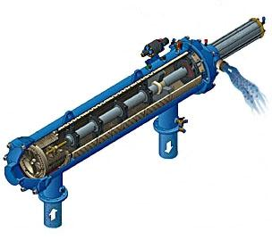

Filtre autocuratitoare seria M104LP-M110P (modele cu piston)
Solutia ideala de filtrare pentru o mare varietate de aplicatii industriale
Caracteristici:
- 1 functionare automata în regim de autocuratire;
- 2 nu necesita aport energetic exterior;
- 3 filtrare continua si eficienta;
- 4 usor de instalat si întretinut;
- 5 capacitati mari de filtrare;
- 6 constructie compacta si robusta;
- 7 siguranta în functionare;
- 8 perioada redusa de amortizare;

Principalele aplicatii:
- 1 filtrarea apei din circuitele de alimentare;
- 2 filtrarea apelor de racire;
- 3 protejarea echipamentelor impotriva depunerilor, colmatarilor (pompe, schimbatoare de caldura, instalatii de spalare, duze, etc.);
- 4 recircularea apelor de spalare, de racire;
- 5 filtrarea efluentilor in vederea protejarii mediului;
- 6 prefiltrarea apei potabile;
- 7 eliminarea nisipului, ruginii, etc. din circuitele de termoficare;
- 8 protejarea instalatiilor de irigatii;
Functionare:
Apa introdusa în filtru prin racordul de alimentare trece (de la exterior spre interior) printr-un filtru grosier cu rol de retinere a particulelor de dimensiuni mari si de protectie a celorlalte componente ale filtrului, dupa care trece prin elementul filtrant, fiind evacuata din filtru prin racordul de iesire.
Pe masura ce impuritatile retinute se acumuleaza pe suprafata interioara a elementului filtrant, creste caderea de presiune pe filtru. La atingerea unui nivel presetat (între 0,2 - 0,8 bar), controlerul de spalare comanda un ciclu de autocuratire prin deschiderea ventilului de purjare. Deschiderea acestui ventil de purjare cauzeaza scaderea presiunii în camera rotorului hidraulic si formarea unui puternic curent de spalare inversa dinspre zona apei filtrate catre atmosfera.
Acest curent de spalare inversa creaza un efect de absorbtie la duzele colectorului de impuritati, curatând astfel suprafata elementului filtrant în dreptul acestor duze. Apa de spalare împreuna cu impuritatile absorbite de pe elementul filtrant trec prin colectorul de impuritati si prin rotorul hidraulic cauzând rotirea ansamblului colector de impuritati - rotor hidraulic.
Odata cu deschiderea ventilului de purjare, controlerul de spalare comanda hidraulic si deplasarea pistonului din cilindrul, piston aflat în legatura cu colectorul de impuritati. Astfel, miscarea combinata (de rotatie si translatia axiala) a colectorului conduce la curatirea întregii suprafete a elementului filtrant si la anularea caderii de presiune Dp cauzate de acumularea impuritatilor.
Când spalarea inversa este completa (colectorul a ajuns la capatul cursei), o a doua spalare este comandata, colectorul fiind readus în pozitia lui initiala iar ventilul de purjare este reînchis. Deoarece spalarea inversa a elementului filtrant se face la un moment dat doar în dreptul duzelor colectorului de impuritati, pe restul suprafetei filtrarea continua, astfel încât procesul de filtrare nu este întrerupt în timpul autocuratirii.
Prin constructia sa si prin sistemul de automatizare hidraulic filtrul autocuratitor FILTOMAT permite:
- limitarea caderii de presiune pe filtru la valoarea dorita între 0,2 - 0,8 bar;
- comandarea manuala a autocuratirii filtrului;
- modificarea finetii de filtrare prin simpla inlocuire a elementului filtrant;
- realizarea de baterii de filtrare prin montarea in paralel a mai multe filtre si comandarea lor in sistemul "master-slave".
Caracteristici tehnice principale:
- 1 temperatura maxima de lucru 65ºC;
- 2 durata aprox. a ciclului de autocuratire 10 - 15 sec.;
- 3 presiune maxima de lucru 10 bar;
- 4 presiune minima la autocuratire 2 bar;
- 5 cadere de presiune la debit maxim 0,2 bar;
- 6 debitul apelor de spalare 30-35 m3/h.